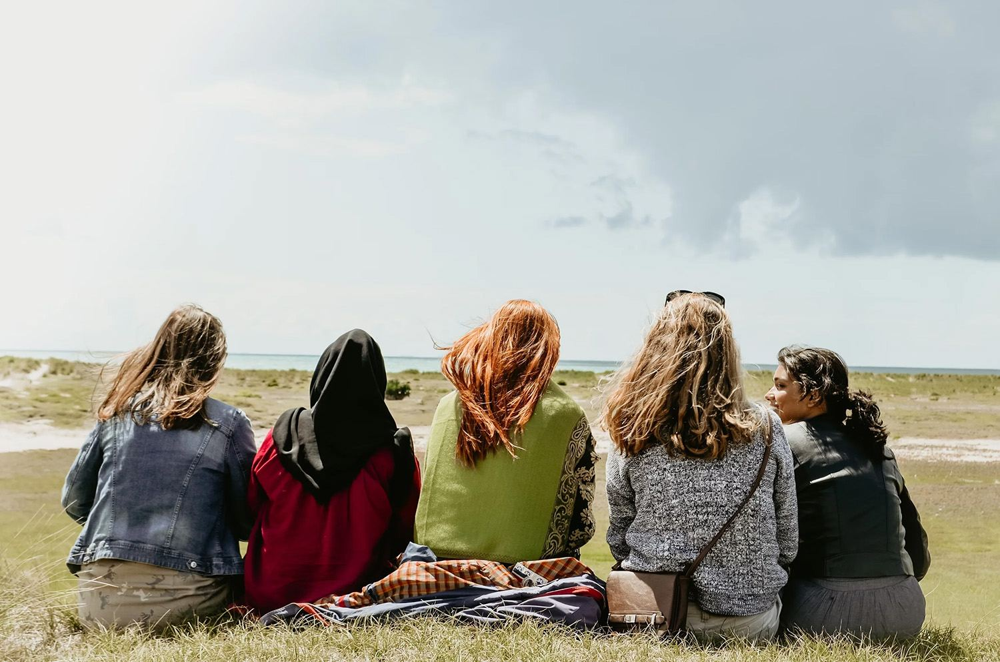

North Wales · Local and global
A light for freedom, dignity and justice.
We help schools, churches and communities understand global injustice, from modern slavery and exploitation to poverty, conflict and displacement, and take practical steps to change it.
Everyone can do something good for others.
Our work rests on three simple ideas. Understand what is happening. Act where you have influence. Stand alongside people who are vulnerable.
01
Learn
Talks, workshops and resources on human rights and global justice for every age, in classrooms, churches and community halls.
02
Act
Practical steps in the places we each influence: what we buy, how we vote, how we welcome, and what we report.
03
Stand alongside
Standing in the gap with people who are marginalised, including survivors of exploitation and abuse, with partners across Wales and Europe.
Standing in the gap
Everyone has the potential to make a real difference.
No one should face injustice alone. We stand alongside people who are marginalised, in North Wales and beyond.

Global justice
The issues we help people understand
Slavery still exists.
50 million
people living in modern slavery worldwide: 28 million in forced labour and 22 million in forced marriage.
1 in 4
of them are children: around 12.5 million girls and boys.
$236bn
in illegal profits made from forced labour every year, close to $10,000 per victim.
23,411
potential victims referred in the UK in 2025, the highest number on record. UK nationals were the largest group.
Sources: ILO, Walk Free and IOM, Global Estimates of Modern Slavery (2022, data for 2021). ILO, Profits and Poverty (2024). Home Office, National Referral Mechanism statistics, end of year summary 2025.
For schools, churches and communities
Invite us to speak with your group.
We regularly speak to community groups, schools and colleges, local authorities, statutory agencies, churches and faith groups. Every session is shaped around your audience.
Request a sessionSchools and colleges
Assemblies, lessons and sixth-form workshops.
Churches and faith groups
Services, study groups and a guide for church communities.
Community groups
Talks for clubs, societies and local networks.
Professionals
Awareness training for agencies and frontline staff.

Our story
Rooted in North Wales, shaped by three decades across Europe.
Haven of Light was founded by Ali Ussery in 2013. Her work began in north-east Romania in 1990, after the fall of communism, in children's homes, hospitals and poor rural and Roma communities. With her husband Nate she later helped build Renewing Our Minds, a reconciliation project bringing young people together across the former Yugoslavia, which has continued since 1999.
Those years taught us to see the people who are easily overlooked. Today we work in North Wales and with partners across Europe, guided by the OSCE's four Ps: prevention, protection, prosecution and partnership.
Milestones
- 1990Aid and development work begins in Romania.
- 1999Renewing Our Minds reconciliation project starts in the Balkans.
- 2013Haven of Light is founded in North Wales.
- 2018Organises the North Wales Modern Slavery Forum.
- 2020Co-hosts "Lighten our Darkness" with the Church in Wales.
“All human beings are born free and equal in dignity and rights. They are endowed with reason and conscience and should act towards one another in a spirit of brotherhood.”
Worried someone is being exploited?
Call the Modern Slavery & Exploitation Helpline, free and confidential, 24 hours a day. If someone is in immediate danger, call 999.
Help us bring more light to more places.
Your gift helps us reach more classrooms, congregations and communities, and support people who have survived exploitation.